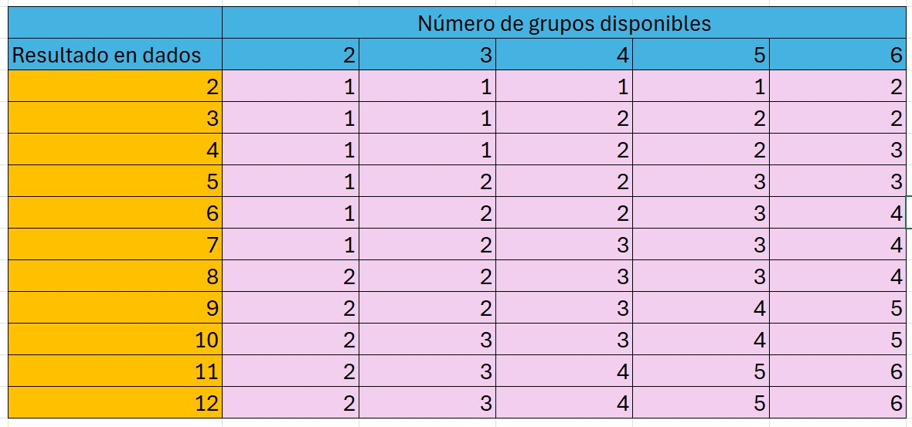

Reglas Especiales
Reglas Especiales
Reglas especiales
Arma avanzada por rasgo
De pulsos(P) -2 al modificador de disparo
LB-X (Cambio de munición) alterna entre racimo y disparo de cartucho
RAC (Rotary Auto Cannon) permite disparar hasta 6 veces en el mismo turno, por cada 1 se atasca por un turno
Doble cañón (S) dispara dos veces
Reglas especiales
Racimo
Los disparos de racimo (C) sueltan varios proyectiles o grupos de proyectiles que el jugador divide equitativamente en función de una tabla
Los LRM, SRM y CA-Ultra poseen este rasgo y cada grupo de proyectiles se resuelve uno por uno.
